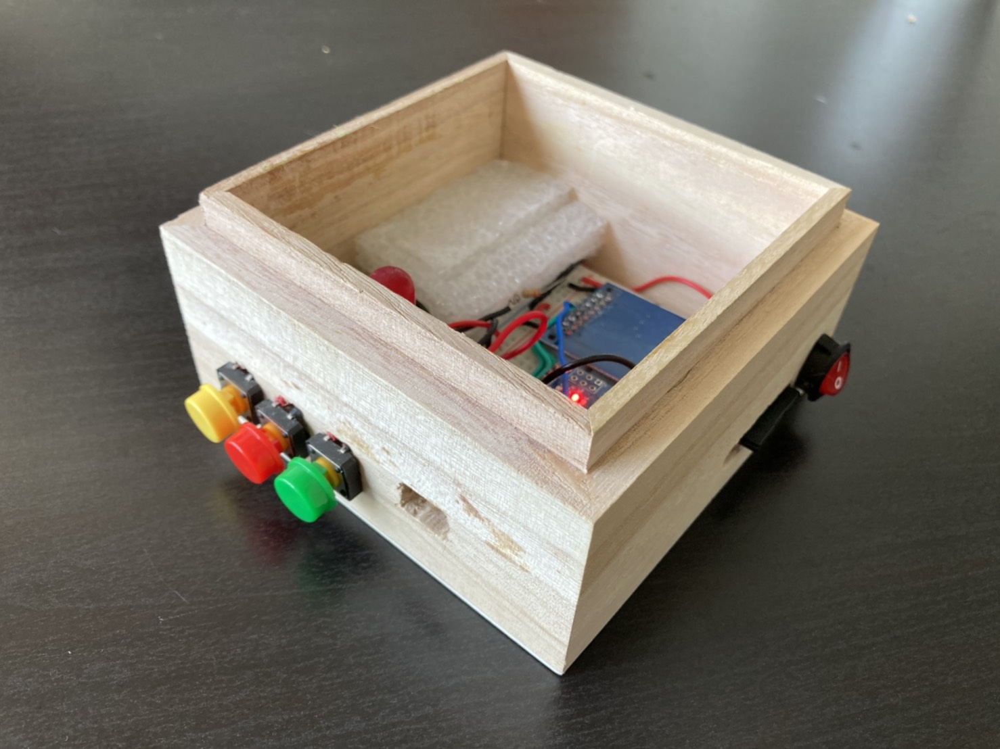
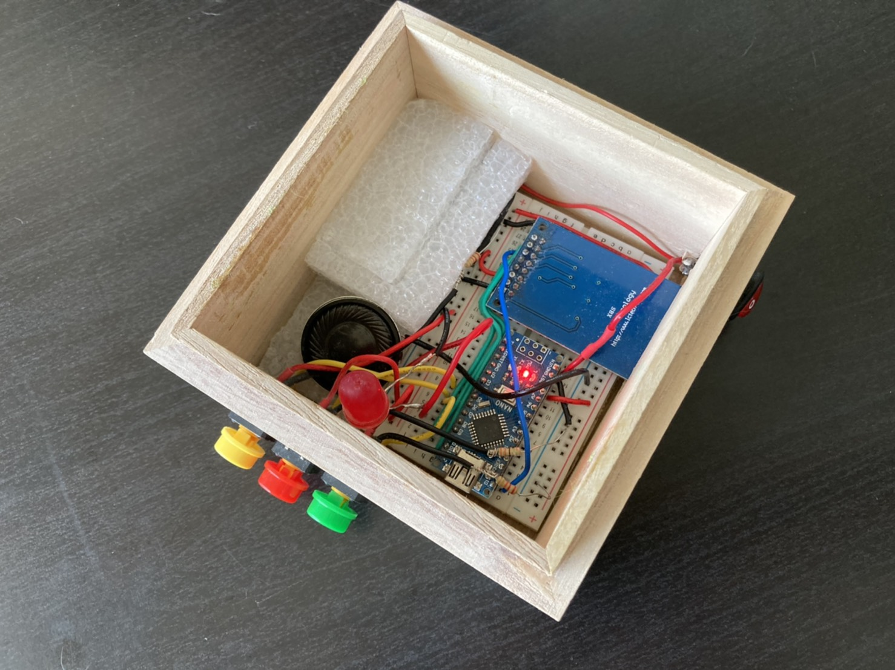
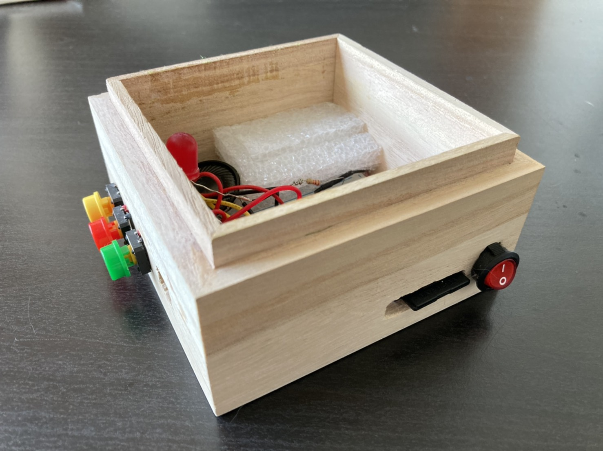
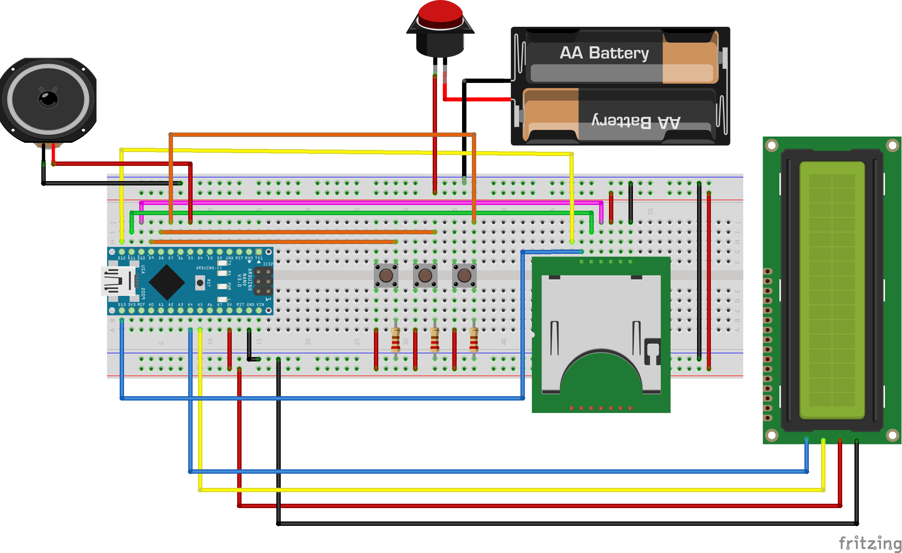
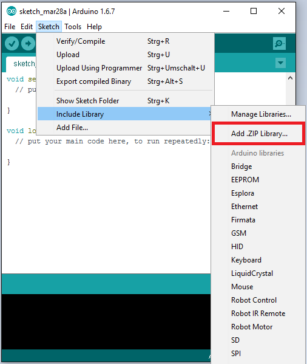
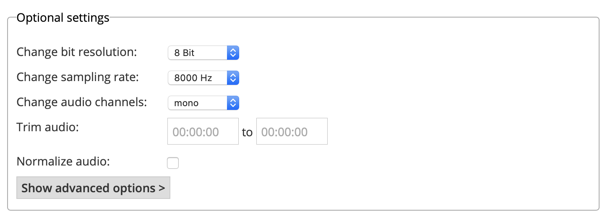

Music Box
[Code]

Music Box
Self-Made Music Box
View Demo
About The Project
This is a Self-Made Music Box built with Arduino. Music will be read through SD module (LC-SD) and output by a 8-Ohm 2W speaker. Buttons on the box supports Play/Stop, Next/Previous; LCD was prepared to show music name. However, the LCD module doesn’t support Traditional Chinese output, so the LCD was not implemented in this project finally.
- Read Music From SD card
- Play music from speaker
- Play/Stop, Next/Previous
- Show information from LCD



Built With
- Arduino Nano
- LC Technology SD Card Module LC-SD
- 8-Ohm 2-W Speaker *1
Schematic
Getting Started
Libraray
Import all the libraries in ./Library/

Music Format
Music format must be .wav, 8 Bit resolution, 8 KHz sample rate, mono audio. You can convert your audio file with this site.
